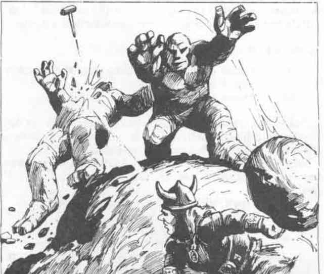

乌拉 · Ulaa
乌拉（主要神） Ulaa (Major Deity)
 |
|
乌拉是矿工、丘陵居民、登山者和采石工的守护女神。她在半人类中也拥有大量追随者，尤其是矮人、侏儒和半身人。献给乌拉的圣龛、神庙和小教堂遍布弗兰尼斯各地，总是位于多石地区，如果不是在地下的话。献给乌拉的礼拜包括展示泥土和宝石、在石头上有节奏地敲击，以及以低沉音调吟唱的赞美诗。
乌拉的化身 Ulaa's Avatar
| 项目 | 数据 |
|---|---|
| 生命骰 HD | 22 |
| 命中 AC 0 所需值 THAC0 | 8 |
| 施法能力 SpA | CL/MU 13/13 |
| 移动率 MV | 9”（18”） |
| 护甲等级 AC | -5 |
| 生命值 hp | 100 |
| 攻击次数 #AT | 2（持锤时 1） |
| 伤害 Dmg | 1d6 +13／1d6 +13，或见下文 |
| 魔法抗性 MR | 45% |
| 体型 SZ | M |
| 力量 Str | 19 |
| 智力 Int | 18 |
| 感知 Wis | 18 |
| 敏捷 Dex | 17 |
| 体质 Con | 18 |
| 魅力 Cha | 16（矮人和侏儒形态为 18） |
乌拉可以呈现男性或女性、矮人、侏儒、人类或她选择的任何其他生物形象。然而，她所有的伪装都倾向于具有矮人般的比例和侏儒般的面容。她通常给自己装备精金链甲和镶嵌宝石的胸甲。她总是携带一把附魔的军用镐和一把雷霆之锤。
乌拉免疫所有以大地为基础的法术。她可以以每回合 18”的速度穿过泥土或岩石。土元素位面的生物尊敬她：如果她是善良或中立，它们会忠实地应她的请求服务；如果她是邪恶，它们见到她就会逃走。她的听觉是人类标准的两倍，并拥有 240 英尺红外视觉和超视觉。
她最常见的化身只能被 +3 或更高附魔的武器击中；与泥土或石头接触时，每轮再生 1 点生命值。无论采取何种形态，她都能以 12 级能力一次施展一个以下法术，每轮一次：
- 每天一次：地震术、雕像术、移土术、玻璃钢、石墙、召唤土元素（24 HD）。
- 每天两次：岩石化泥、石转肉、肉转石、石墙。
- 每天三次：穿墙术、次元门、石塑术、玻璃化、力墙。
乌拉的军用镐为 +5。她每隔一轮就可以把雷霆之锤投掷到 140 英尺外，无需休息。她的最常见化身对大型对手造成 2d4 +12 点伤害（假设没有直接杀死它们，见《地下城主指南》）。攻击小型对手（少于 1 个生命骰）时，乌拉可以用锤子每次攻击杀死总计 2d4 +12 个生命骰的生物。
乌拉的牧师 Ulaa's Clerics
| 项目 | 数据 |
|---|---|
| 阵营 AL | 守序善良、中立 |
| 法衣 RA | 见下文 |
| 额外经验消耗 AEx | +5% |
| 武器 WPN | 棍棒、连枷、锤、钉头锤、法杖、军用镐、投石索 |
| 法术领域 SPH | 战斗、元素、防护、治疗、守护、预言（次要） |
| 特殊能力 SPL | 见下文 |
| 额外法术 ADD | 命令大地、光亮、持续光亮、任务术、活化物品、英雄盛宴 |
| 位面 PN | 土元素位面 |
乌拉的牧师穿棕色、绿色，或根据等级穿这两种颜色组合的长袍。他们是社区的仆人和保护者。1 级时，他们必须选择一个敌人，通常是某种对当地构成威胁的怪物。以近战攻击这种敌人时，牧师获得 +1 伤害加值。牧师每提升三个等级，该加值额外增加 +1，最高 +4。敌人必须是一种特定的生物，例如丘陵巨人、兽人或巨魔等。
在较低等级时，乌拉的牧师会获得以下法术：
| 牧师等级 | 获得的法术 |
|---|---|
| 1–3 | 侦测隐形物体 |
| 4–6 | 挖掘 |
| 7–9 | 穿墙术 |
| 10+ | 石转肉 |
拥有红外视觉的半人类在使用侦测隐形物体法术时，这项能力的有效距离加倍。施法时间正常，法术以牧师等级施展。
额外法术 Additional Spell
命令大地 Command Earth（变化）
此法术赋予牧师对土元素生物的有限控制力。法术有效期间，土元素和其他来自土元素位面的生物无法在距离施法者五英尺以内接近或攻击施法者。施法者可以放弃这项保护，并尝试魅惑该生物。对抗魅惑的豁免受到 -2 处罚。如果魅惑失败，生物就可以自由攻击施法者。法术有效期间，施法者可以与土元素生物交谈；与牧师阵营相同的土元素生物会倾向于对牧师友好（除非牧师尝试魅惑）。如果成功魅惑一个土元素，施法者可以像使用六级魔法使用者法术一样让它施展移土术。此法术的材料成分是乌拉的圣徽（内含红宝石之心的山峰）和一颗不透明宝石。